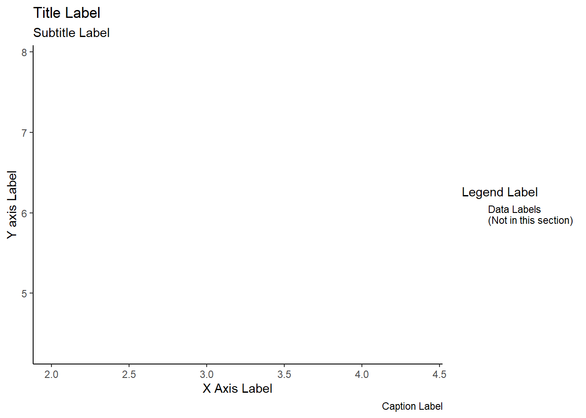
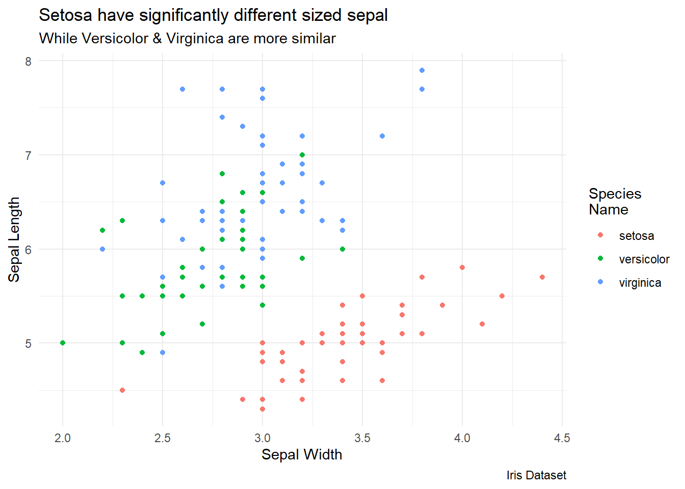
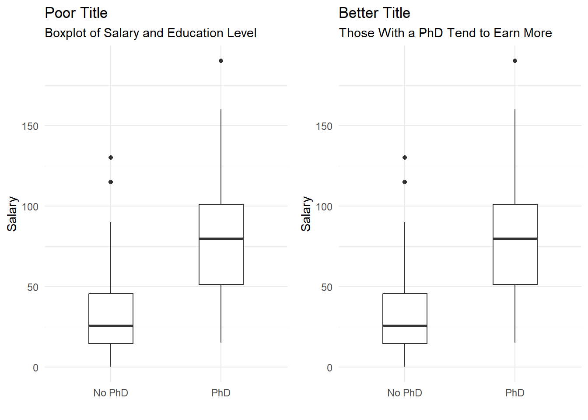
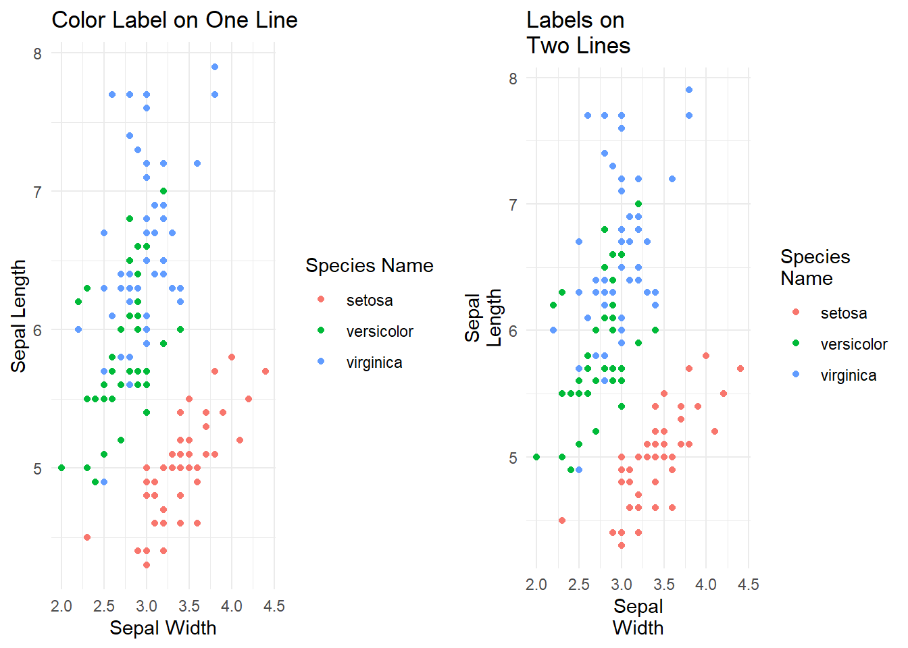
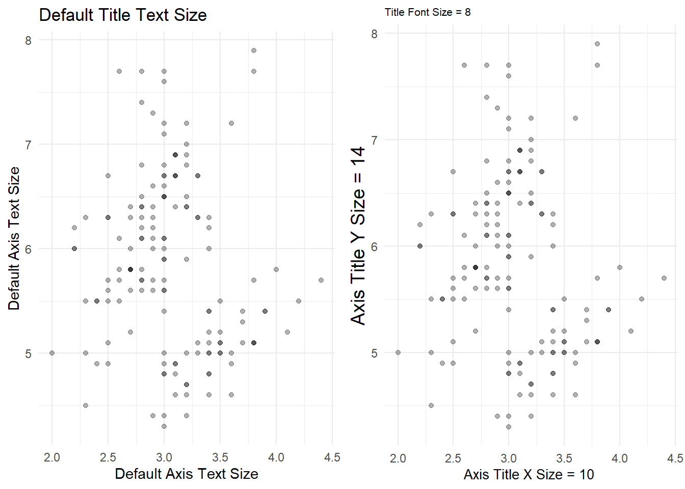
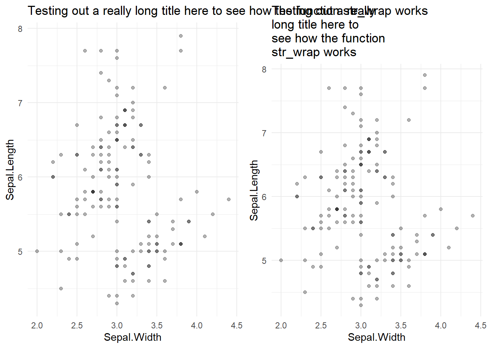

This section of labels will cover all items on the “outside” of the graph. These include:
the chart title,
the X and Y axis labels (not the labels from the data near the tick marks),
subtitles,
captions, and
legend labels
Pictured below highlights the labels discussed in this section.

To adjust these labels, use the gf_labs( ) command added as a layer to any plot.
For example: gf_plot( Y ~ X ) %>% gf_labs( title = “Title of Chart” )
The following items can be adjusted in the gf_labs command. The words in parentheses are the specific command optoin to adjust each item.
Title of graph (title)
Subtitle of graph (subtitle)
X & Y axis labels (x) or (y)
Legend Headings (e.g. color, size, fill)
Caption for things like source info (caption)
gf_point(Sepal.Length~Sepal.Width, data = iris, color = ~Species) %>%
gf_labs(
y = "Sepal Length",
x = "Sepal Width",
color = "Species\nName",
title = "Setosa have significantly different sized sepal",
subtitle = "While Versicolor & Virginica are more similar",
caption = "Iris Dataset")
Scott Berinato (author of Good Charts) recommends the title act as a headline rather than repeating the axis. He uses the comparison of the following two titles:
Not as useful: “Distribution of Spending on Health Care and Wellness”
Much more useful: “More Spending Doesn’t Increase Wellness”
Our goal is to have a title that explicitly tells the reader what trends they should be seeing in the visuals we create.

Note that to split labels onto multiple lines, use ‘\n’
Example on one line: color = “Color Label”
Example on two lines: color = “Color\nLabel”
color.one.line = gf_point(Sepal.Length~Sepal.Width, data = iris, color = ~Species) %>%
gf_labs(
y = "Sepal Length",
x = "Sepal Width",
color = "Species Name",
title = "Color Label on One Line")
color.two.lines = gf_point(Sepal.Length~Sepal.Width, data = iris, color = ~Species) %>%
gf_labs(
y = "Sepal\nLength",
x = "Sepal\nWidth",
color = "Species\nName",
title = "Labels on\nTwo Lines")
grid.arrange(color.one.line, color.two.lines, nrow = 1)
To change the font size of any labels, adjust the theme elements in a gf_theme( ) layer. Specify the element you want to adjust (e.g. plot.title) and specified text size (e.g. element_text(size = 8)).
Example (adjust title size): gf_theme( plot.title = element_text( size = 8 ) )
Example (adjust X axis size): gf_theme( axis.title.x = element_text( size = 10 ) )
default.size = gf_point(Sepal.Length~Sepal.Width, data = iris, alpha = 0.3) %>%
gf_labs(
y = "Default Axis Text Size",
x = "Default Axis Text Size",
title = "Default Title Text Size")
smaller.size = gf_point(Sepal.Length~Sepal.Width, data = iris, alpha = 0.3) %>%
gf_labs(
y = "Axis Title Y Size = 14",
x = "Axis Title X Size = 10 ",
title = "Title Font Size = 8") %>%
gf_theme(plot.title = element_text(size = 8),
axis.title.x = element_text(size = 10),
axis.title.y = element_text(size = 14))
grid.arrange(default.size, smaller.size, nrow = 1)
The package tidyverse has a string wrapper function called str_wrap( ) that you can use to automatically wrap labels to a width of your choosing.
Note: require(tidyverse) to run str_warp( ) command
Example (wrap title): gf_labs( title = str_wrap(“Put your really long title here”, width = 20) )
This will automatically wrap after 20 characters. You can adjust to the need of your plot. Notice that it does condense the size of the plot. The overall plot space will include not only the plot itself, but also the titles/labels. If our title/labels take up more space, the plot must shrink.
wrap.title = gf_point(Sepal.Length~Sepal.Width, data = iris, alpha = 0.3) %>%
gf_labs(title = str_wrap("Testing out a really long title here to see how the function str_wrap works", width = 20))
really.long.title = gf_point(Sepal.Length~Sepal.Width, data = iris, alpha = 0.3) %>%
gf_labs(title = "Testing out a really long title here to see how the function str_wrap works")
grid.arrange(really.long.title, wrap.title, nrow = 1)
Other items that can be labeled are:
fill = “fill legend label”
size = “size legend label”
alt = “add alt text to the plot”